09.2 몬테카를로법으로 정책 평가하기
주어진 정책 π에 따라 에피소드 시뮬레이션을 반복하여 상태 가치 함수 vπ(s)를 근사하는 정책 평가(Policy Evaluation) 과정을 배웁니다.
징검다리를 끝까지 건너는 다수의 에피소드 표본 데이터를 기반으로, 각 칸의 기대 가치 카드를 완성해 나가는 도로시의 즐거운 모험을 지니와 함께 살펴봅시다!
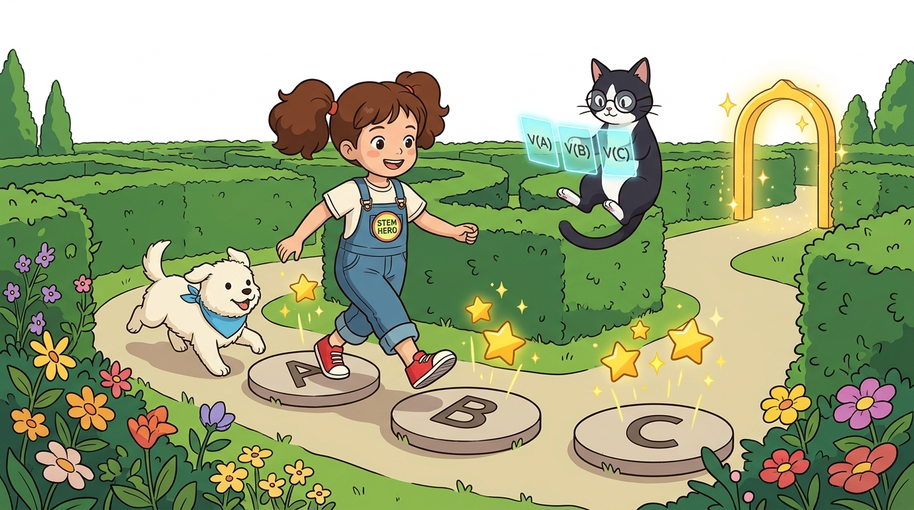
그림 09-2-1 징검다리를 건너가며 에피소드를 완주하고 각 칸의 상태 가치 카드 V(s)를 갱신해나가는 도로시와 연구실 친구들 (16:9 와이드)경험(샘플 데이터)으로 가치 함수를 추정하다
앞서 9.1절에서 우리는 몬테카를로법의 대수적 기초를 배웠습니다.
몬테카를로법은 복잡한 환경의 수학 공식이나 확률 분포표를 전부 펼쳐놓지 않고도, 실제로 주사위를 굴려보는 무작위 샘플링(Sampling)을 수행하고 수집한 표본 데이터로부터 산술 평균(Average)을 내어 참된 기댓값을 계산해 냅니다.
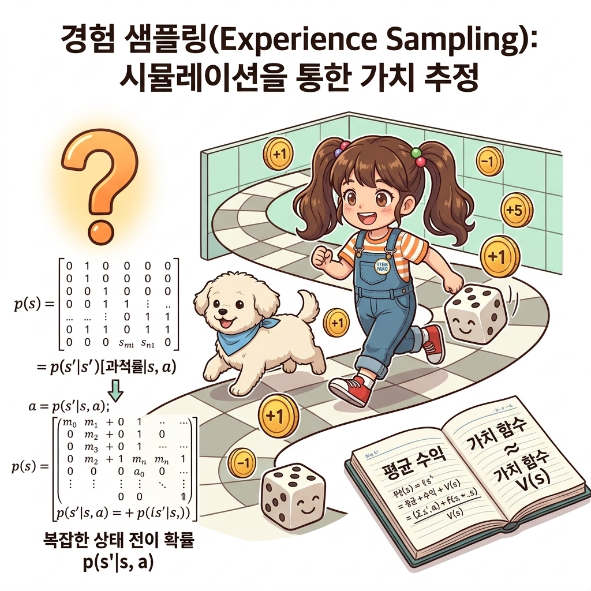
그림 09-2-1a 복잡한 수식 없이 실제 무작위 샘플링(시행)과 산술 평균만으로 참 기댓값을 찾아내는 몬테카를로법의 발상이 기발한 방법은 강화학습 문제에 완벽하게 들어맞습니다.
| 우리가 해결하려는 미지의 세상에서는 환경의 상태 전이 확률 p(s’ | s, a)나 보상 함수 r(s, a, s’)를 사전에 알 수 없습니다. |
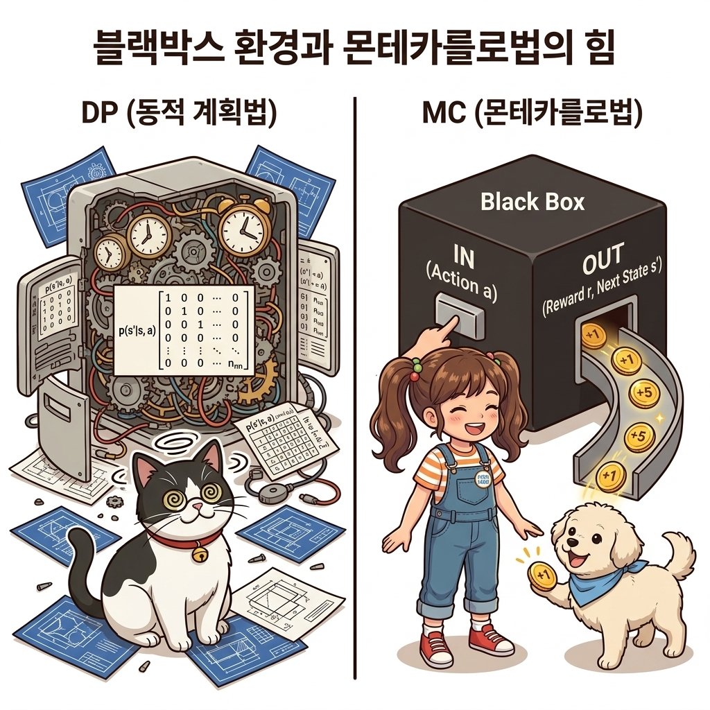
그림 09-2-1b 전이 확률과 보상 함수를 모르는 미지의 블랙박스 환경에 완벽히 들어맞는 몬테카를로의 경험 수집 방식하지만 괜찮습니다!
에이전트가 세상에 직접 발을 내딛고 몸으로 부딪치며 얻은 경험(실제 누적 수익 샘플 데이터 G)만 모을 수 있다면, 그 경험들을 평균 내는 것만으로도 각 상태의 참 가치 함수를 놀랍도록 정확하게 추정할 수 있기 때문입니다.
그림 09-2-1c 에이전트가 몸으로 부딪혀 얻은 실제 누적 수익 샘플(G)들을 모아 각 상태의 참 가치를 정밀하게 추정하는 원리
이번 절에서는 에이전트의 행동 지침인 고정된 정책 π가 주어졌을 때, 그 정책을 따랐을 때 각 상태가 얼마나 좋은 곳인지를 몬테카를로법으로 계산해내는 ‘정책 평가(Policy Evaluation)’ 과정을 집중적으로 다룹니다.
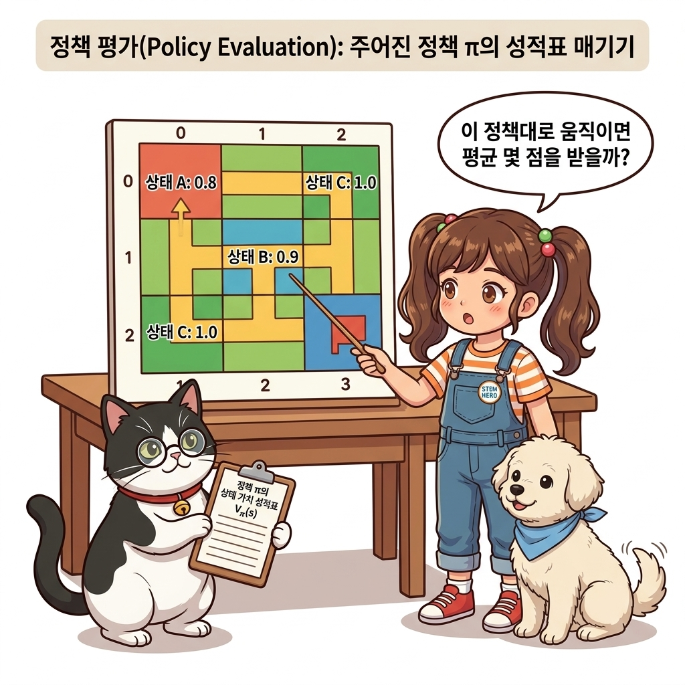
그림 09-2-1d 에이전트의 행동 지침인 고정 정책 π를 따를 때 각 상태의 잠재 점수를 매기는 정책 평가(Policy Evaluation)의 개념09.2.1 가치 함수를 몬테카를로법으로 구하기
가치 함수의 복습과 정의식
강화학습에서 ‘상태 가치 함수’란 에이전트가 어떤 상태에서 출발하여 앞으로 얻을 수 있는 장기적인 기대 수익의 총합을 뜻합니다:
vπ(s) = Eπ[Gt | St = s]
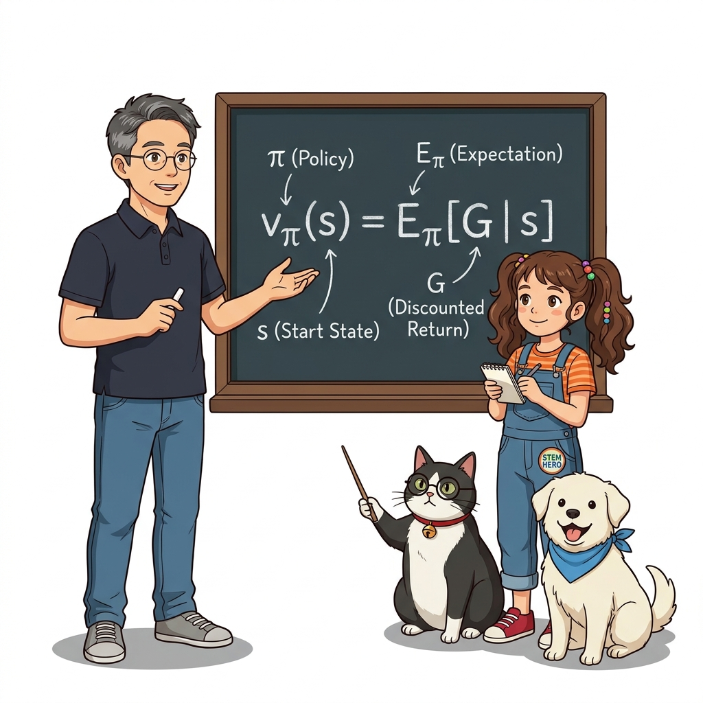
그림 09-2-2 가치 함수 정의식 vπ(s) = Eπ[Gt | St = s]의 기호별 의미(정책, 출발 상태, 조건부 기댓값)를 칠판에서 해설하는 장면💡 수식 돋보기: 가치 함수 정의식 기호 해부
가치 함수 수식의 기호를 하나하나 뜯어보면 강화학습의 평가 원리가 한눈에 들어옵니다:
- vπ(s) (상태 s의 참 가치):
- 정책 π를 고정하고 따랐을 때, 에이전트가 현재 상태 s에 서 있다는 사실 자체만으로 기대할 수 있는 장기적인 잠재 가치 점수입니다.
- Eπ[·] (정책 조건부 기댓값):
- 미래에 어떤 상태로 미끄러질지(환경의 확률성)와 에이전트가 어떤 행동을 고를지(정책의 확률성)를 모두 고려하여 구한 이론적인 가중 평균값입니다.
- Gt (시점 t의 누적 할인 수익, Return):
- 지금 당장 손에 쥐는 1스텝 보상뿐만 아니라, 게임이 끝날 때까지 미래에 받게 될 모든 보상들을 할인율 γ로 깎아서 전부 더한 알짜배기 총수익(Gt = Rt+1 + γRt+2 + γ2Rt+3 + …)입니다.
-
** St = s (조건부 출발점)**: - “시점 t에 에이전트가 서 있는 출발 위치가 정확히 상태 s일 때”라는 수학적 단서 조건입니다.
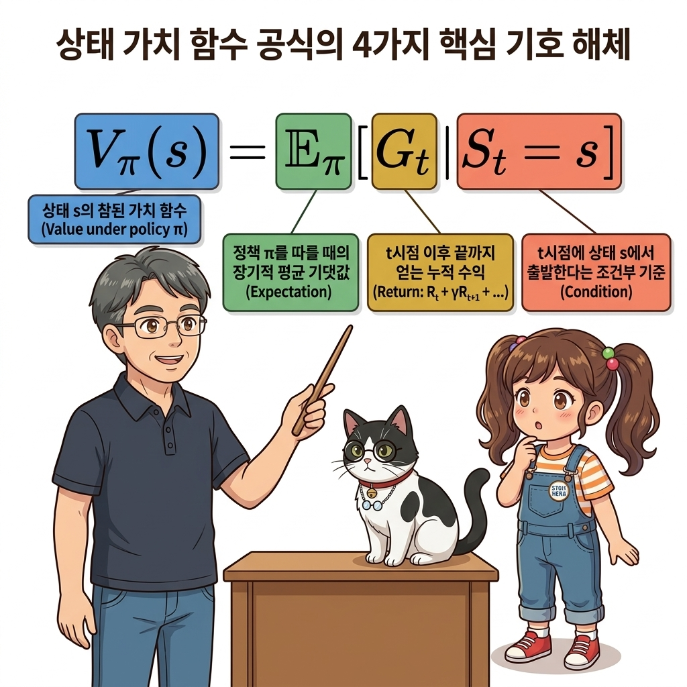
그림 09-2-2a 가치 함수 정의식 v_π(s) = E_π[G_t | S_t = s]의 4대 핵심 기호 정밀 해부 인포그래픽몬테카를로법으로 가치 함수 근사하기
이 가치 함수를 몬테카를로법으로 계산하려면 어떻게 해야 할까요?
복잡한 적분이나 연립방정식을 풀 필요가 전혀 없습니다!
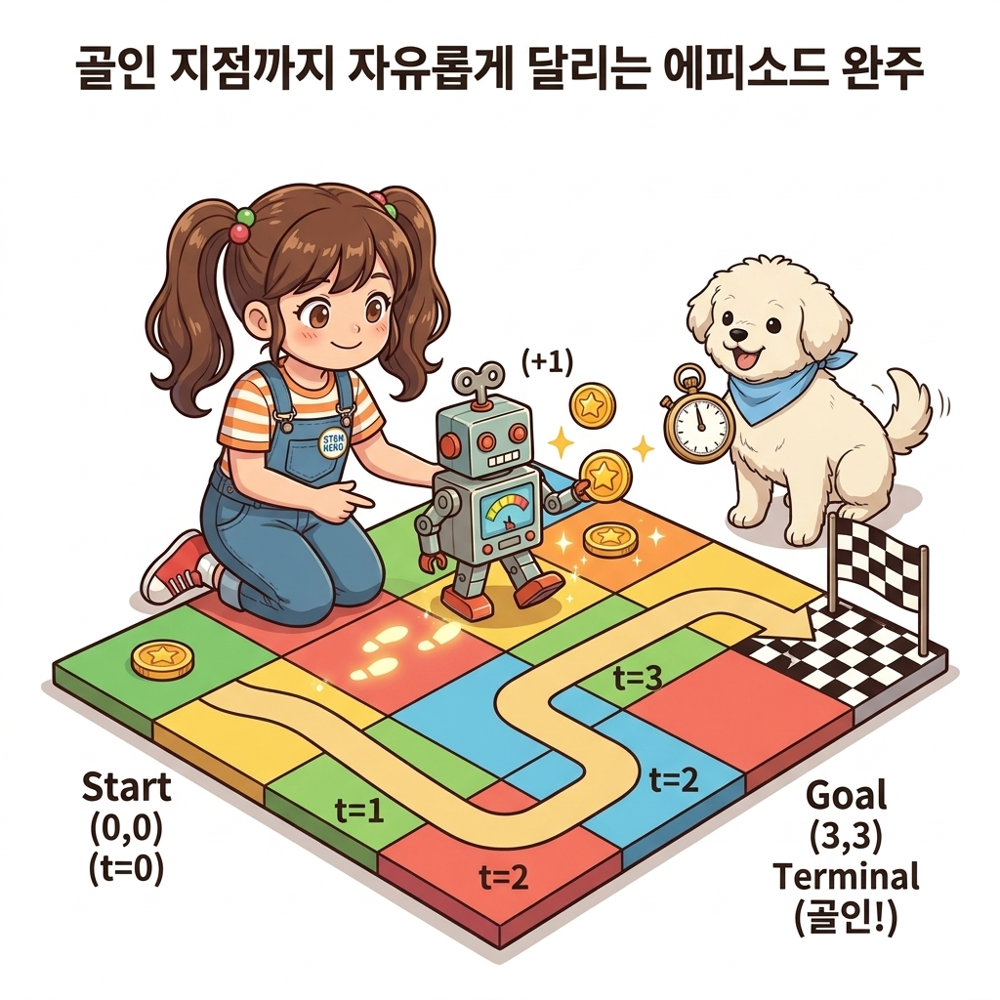
그림 09-2-2a2 복잡한 연립방정식이나 적분 수식 없이, 정책에 따라 미로 속을 마음껏 뛰어다니며 경험을 쌓는 몬테카를로 시뮬레이션에이전트에게 정책 π에 따라 실제로 환경 속을 마음껏 뛰어다니도록 지시하면 됩니다.
출발 상태 s에서 시작하여 에피소드가 끝날 때까지 완주하면, 골인 지점에 도달했을 때 에이전트의 손에는 실제로 획득한 보상들의 누적 합인 수익 표본(G)이 쥐어집니다.
그림 09-2-2a3 출발 상태 s에서 시작하여 목표 골 지점에 도달했을 때 에이전트 손에 쥐어지는 누적 수익 표본 G 토큰
이러한 모험을 n번 반복하여 얻은 실제 수익들이 바로 샘플 데이터(G(1), G(2), …, G(n))가 되며, 이 샘플들의 산술 평균을 구하면 가치 함수의 추정치 Vπ(s)가 완성됩니다:
Vπ(s) = (G(1) + G(2) + … + G(n)) / n = (1/n) ∑i=1n G(i)
상태 s에서 시작하여 i번째 에피소드에서 얻은 실제 수익을 G(i)라 할 때, n번의 에피소드 표본 평균으로 Vπ(s)를 추정합니다.
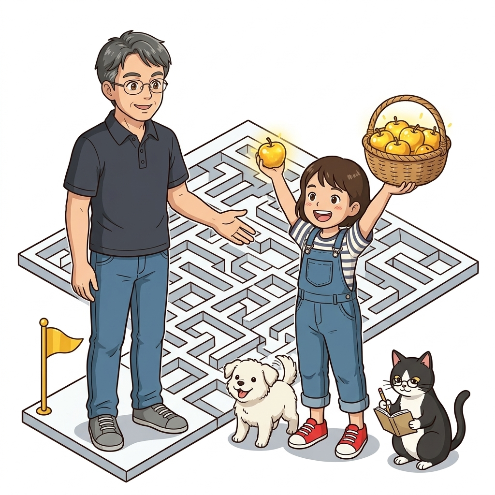
그림 09-2-2b 에피소드 완주 지점(Goal Flag)에서 황금 사과 바구니를 들고 기뻐하는 도로시와 토토를 맞이하며, 완주된 총수익 G를 장부에 기록하여 가치 함수 평균을 갱신하는 이호진 교수님과 조교 지니[!CAUTION] ⚠️ 몬테카를로법은 오직 일회성 과제(Episodic Task)에서만 이용할 수 있습니다!
몬테카를로법은 반드시 ‘에피소드가 끝까지 완주되어 골인 지점에 도달해야만’ 총수익 G가 확정됩니다.
만약 24시간 365일 멈추지 않고 계속되는 로봇 제어나 주식 거래 같은 지속적 과제(Continuing Task)라면, 게임에 ‘끝’이 없기 때문에 에피소드가 영원히 종료되지 않고, 따라서 수익 샘플 G(i)를 영영 계산할 수 없어 몬테카를로법을 적용할 수 없습니다.
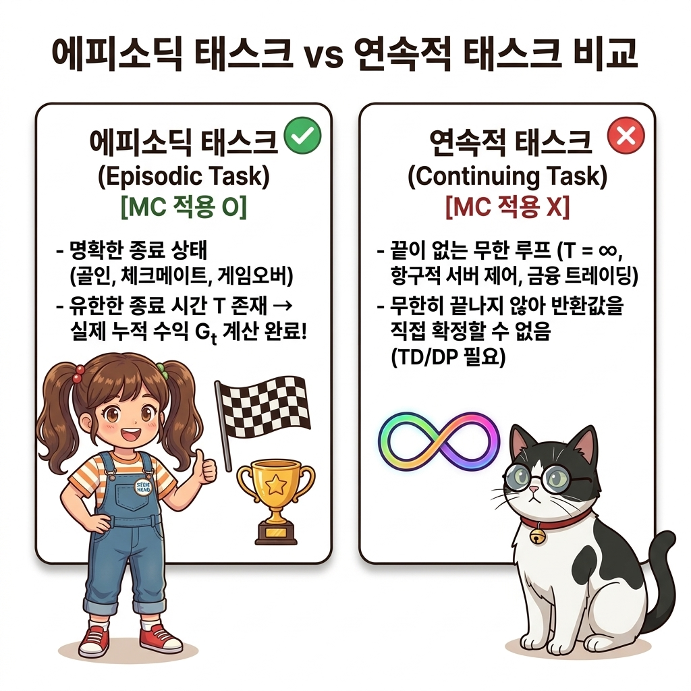
그림 09-2-2c 명확한 종료 골인 지점이 있는 일회성 과제(Episodic)와 끝없이 회전하는 지속적 과제(Continuing)의 결정적 차이구체적인 2회 시도 예시: 표본 평균의 수렴
중학생도 단번에 감을 잡을 수 있도록, 에이전트가 상태 s에서 출발하여 딱 2번의 에피소드를 진행한 구체적인 숫자 예시를 살펴봅시다:
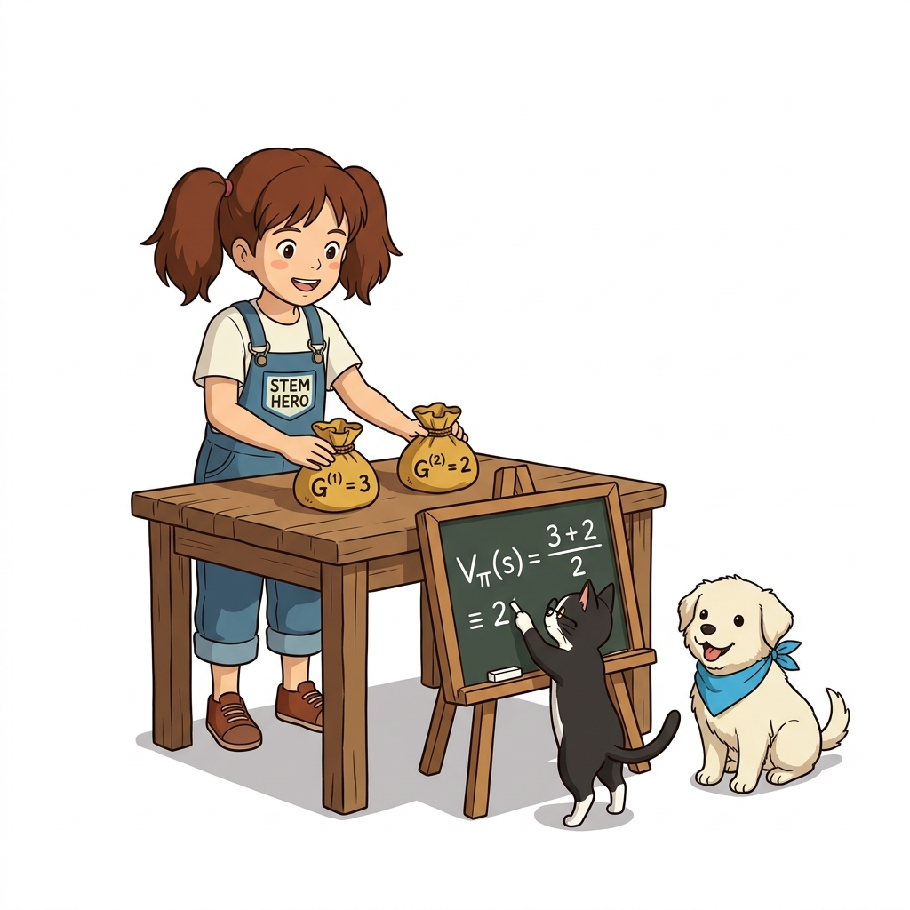
그림 09-2-3 1차 시도 수익 G^(1)=3과 2차 시도 수익 G^(2)=2를 모아 산술 평균 2.5로 가치 함수를 갱신하는 도로시와 지니이해를 돕기 위해 미래 보상을 깎지 않는 할인율 γ = 1이라고 가정해 봅시다:
- 첫 번째 시도 (에피소드 1):
- 에이전트가 상태 s에서 출발하여 골인 지점까지 가며 보상으로 1점, 0점, 2점을 차례로 획득했습니다.
- 1차 수익 샘플: G(1) = 1 + 0 + 2 = 3
- 1차 추정 가치: Vπ(s) = G(1) = 3.0
- 두 번째 시도 (에피소드 2):
- 에이전트가 똑같은 출발 상태 s에서 다시 출발했습니다. 하지만 환경의 바람이나 에이전트의 주사위 선택이 달라져 이번에는 0점, 0점, 1점, 1점을 얻고 골인했습니다.
- 2차 수익 샘플: G(2) = 0 + 0 + 1 + 1 = 2
- 2차 추정 가치 (2회 표본 평균):
Vπ(s) = (G(1) + G(2)) / 2 = (3 + 2) / 2 = 2.5
👨🏫 이호진 교수님의 짚어보기:
“첫 번째 시도에서는 3이 나왔고, 두 번째 시도에서는 2가 나왔단다. 만약 세 번째 시도에서 4가 나온다면 평균은 (3 + 2 + 4) / 3 = 3.0이 되겠지?
매 시도마다 우연에 의해 얻는 점수가 조금씩 요동치더라도, 시도 횟수 n이 10번, 100번, 1000번으로 늘어나면 대수의 법칙(큰 수의 법칙)에 의해 우연한 흔들림이 서로 상쇄되면서 원래 환경이 품고 있던 진짜 참값 vπ(s)에 자석처럼 오차 없이 수렴하게 된단다!”
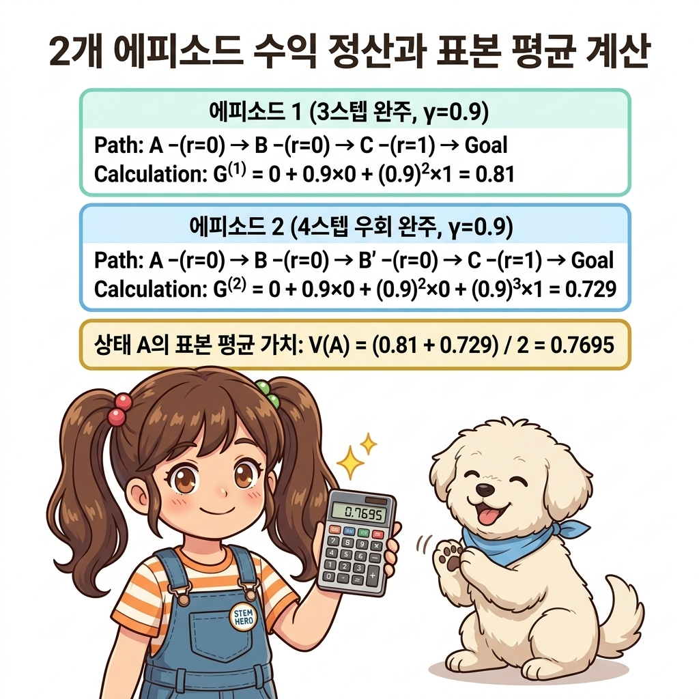
그림 09-2-3a 1차(3.0), 2차(2.5), 3차(3.0) 시도가 거듭될수록 우연의 흔들림이 상쇄되며 참값으로 수렴해가는 대수의 법칙 차트09.2.2 모든 상태의 가치 함수 구하기: 1타 다피의 혁신
지금까지는 오직 하나의 출발 상태 s에 대해서만 이야기했습니다.
그렇다면 우리가 탐험하는 미로에 상태가 수십 개, 수백 개(예: A, B, C, …) 있다면 이 모든 상태의 가치 함수는 대체 어떻게 구할 수 있을까요?
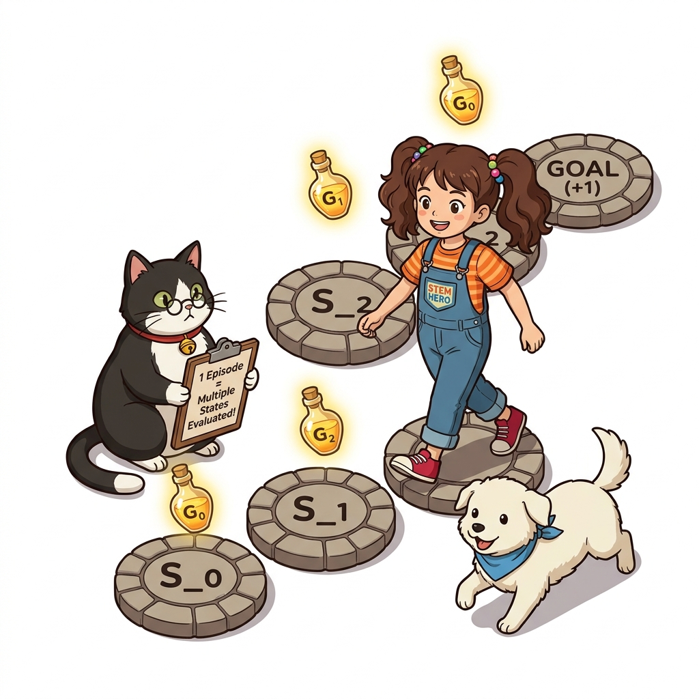
그림 09-2-4 하나의 모험 경로(A ➔ B ➔ C)를 완주하면서 상태 A, B, C의 수익 데이터를 동시에 수확하는 스마트한 경로 학습- 비효율적인 독립 출발 방식의 한계:
- 가장 단순한 생각은 “상태 A의 가치를 알기 위해 A에서 100번 출발해 보고, 상태 B를 위해 B에서 100번 리셋해서 출발하고, 상태 C를 위해 C에서 또 100번 출발하자!”일 것입니다.
- 하지만 이 방식은 엄청난 시간과 컴퓨터 자원을 낭비합니다. 무엇보다 현실의 자율주행차나 로봇은 원하는 임의의 중간 위치로 순간이동(Reset)하여 출발할 수 없는 경우가 대부분입니다!
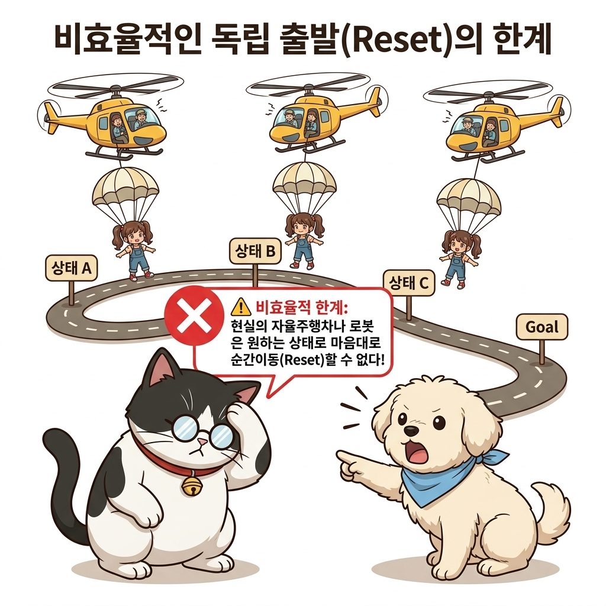
그림 09-2-4a 상태마다 일일이 순간이동 리셋하여 따로따로 출발할 때 발생하는 막대한 자원 낭비와 현실 로봇의 순간이동 불가능 한계- 1타 다피의 단일 경로 수확 방식 (Single Path Multi-Harvesting):
- 놀랍게도 몬테카를로법에서는 그럴 필요가 전혀 없습니다!
- 에이전트가 상태 A에서 출발하여 B를 거치고, C를 지나 골인 지점에 도달했다고 가정해 봅시다:
출발(A) → 보상 R0 → B → 보상 R1 → C → 보상 R2 → 골인(종료)
- 이때 지나온 각 상태의 입장에서 미래의 누적 수익을 계산해 보면 다음과 같습니다:
- 상태 A의 수익: GA = R0 + γR1 + γ2R2 (상태 A를 방문한 이후 얻은 모든 보상의 할인합)
- 상태 B의 수익: GB = R1 + γR2 (상태 B를 방문한 이후 얻은 모든 보상의 할인합)
- 상태 C의 수익: GC = R2 (상태 C를 방문한 이후 얻은 보상)
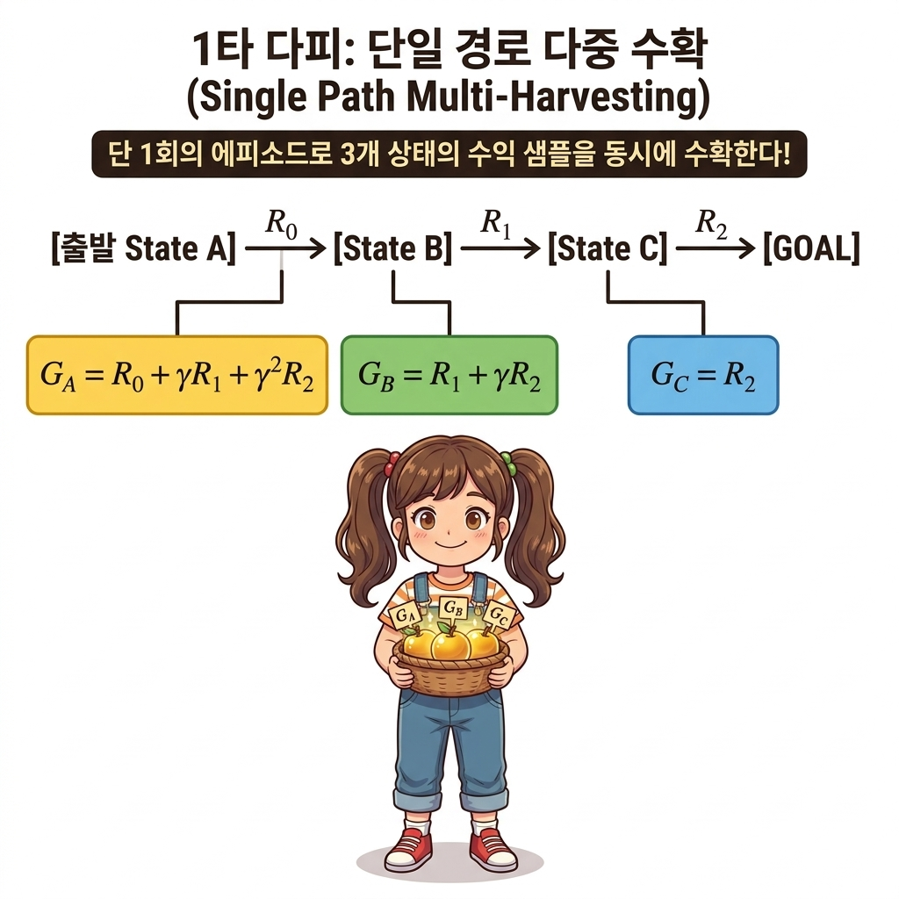
그림 09-2-4c 1타 다피 단일 경로 다중 수확: 출발(A)→보상 R0→B→보상 R1→C→보상 R2→골 경로에서 상태 A, B, C의 수익 GA, GB, GC를 단 1회 주행으로 동시 산출하는 수식 기호 분해 인포그래픽👧 도로시의 기차 여행 비유:
“마치 서울역(A)에서 출발해 대전역(B)과 대구역(C)을 지나 부산역(골)에 도착하는 기차 여행 같아요!
기차가 부산에 도착하고 나면, 서울역에서 탄 승객이 느낀 총여행 만족도(GA), 대전역에서 탄 승객의 만족도(GB), 대구역에서 탄 승객의 만족도(GC)를 단 한 번의 기차 운행으로 동시에 정산할 수 있는 것과 똑같네요!”
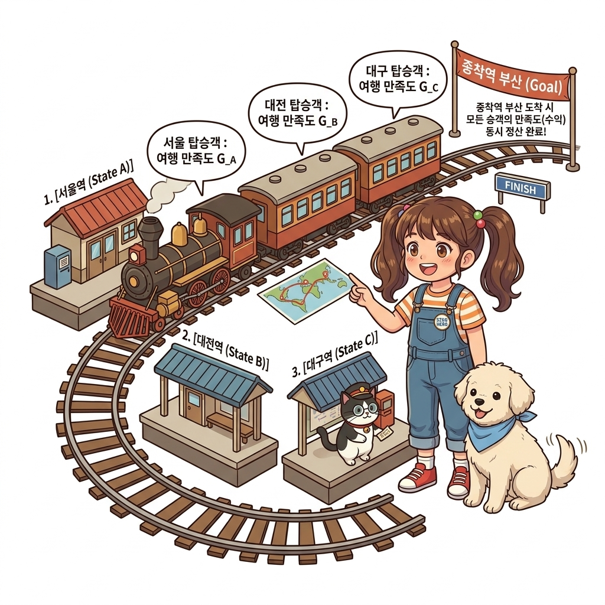
그림 09-2-4d 도로시의 기차 여행 비유: 서울역(A)에서 대전(B), 대구(C)를 거쳐 부산(Goal)에 도착한 기차 승객들의 총 여행 만족도를 단 한 번의 운행으로 동시 정산하는 따뜻한 설명 일러스트이처럼 단 한 번의 에피소드 완주만으로 경로 상에 방문한 모든 상태(A, B, C)에 대한 수익 샘플 데이터를 동시에 수확할 수 있습니다! 에이전트가 환경 속을 자유롭게 탐색하며 다양한 상태를 거쳐 가기만 하면, 출발점을 억지로 리셋하지 않아도 모든 상태의 가치 함수 카드가 골고루 채워집니다.
그림 09-2-4e 억지로 리셋하지 않고 환경을 자유롭게 탐색하며 모든 상태의 가치 카드 표본을 풍성하게 채워 넣고 기뻐하는 도로시와 지니
09.2.3 몬테카를로법 계산 효율 개선: 역방향 수익 정산
마지막으로 이 수익 데이터를 컴퓨터 코드로 계산할 때 발생하는 중복 연산을 완벽하게 제거하는 알고리즘의 묘수를 살펴봅시다.
위에서 구한 세 상태의 수익 계산식을 나란히 놓아보겠습니다:
GA = R0 + γR1 + γ2R2
GB = R1 + γR2
GC = R2
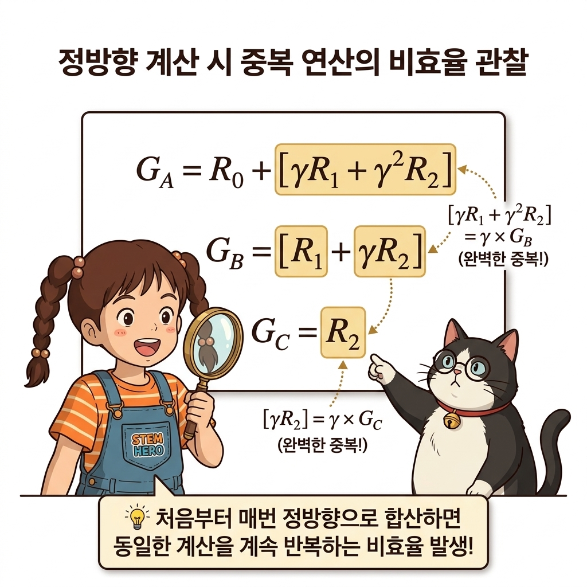
그림 09-2-5a 정방향 수익 계산식 GA = R0 + γR1 + γ²R2 와 GB = R1 + γR2, GC = R2 의 나열과 겹치는 항들을 컬러 박스로 짚어보는 수식 인포그래픽식을 유심히 관찰해 보면 기막힌 규칙이 눈에 들어옵니다:
- GA의 뒷부분(γR1 + γ2R2)은 사실 γ(R1 + γR2) = γGB와 완전히 같습니다!
- 마찬가지로 GB의 뒷부분(γR2)은 γGC와 완전히 같습니다!
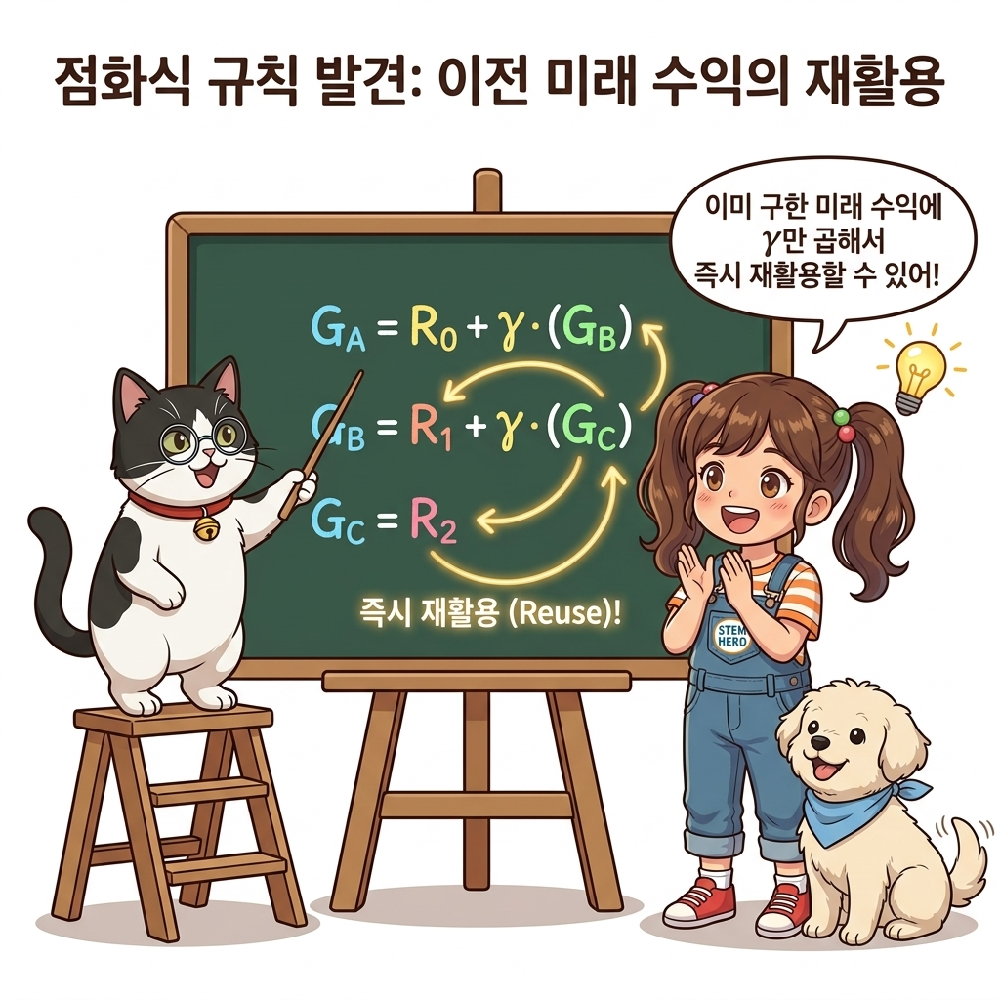
그림 09-2-5b 점화식 패턴 발견: GA의 뒷부분이 정확히 γGB와 같음을 돋보기로 발견하고 기뻐하는 지니와 도로시의 수식 연결 인포그래픽즉, 수식을 다음과 같이 점화식 형태로 다시 쓸 수 있습니다:
GC = R2
GB = R1 + γGC
GA = R0 + γGB
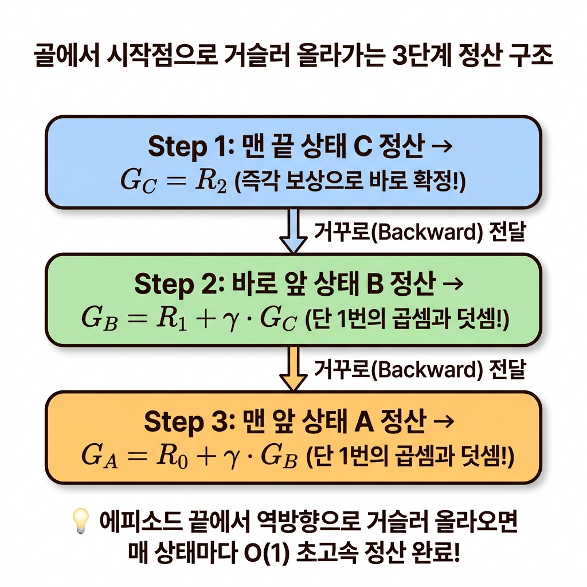
그림 09-2-5c 골에서 시작점으로 거슬러 올라가는 3단계 점화식 계산 구조 (GC=R2 → GB=R1+γGC → GA=R0+γGB) 인포그래픽일반화하면 어떤 임의의 시점 t에서의 수익 Gt는 다음과 같은 아름다운 재귀 점화식으로 표현됩니다:
Gt = Rt + γGt+1
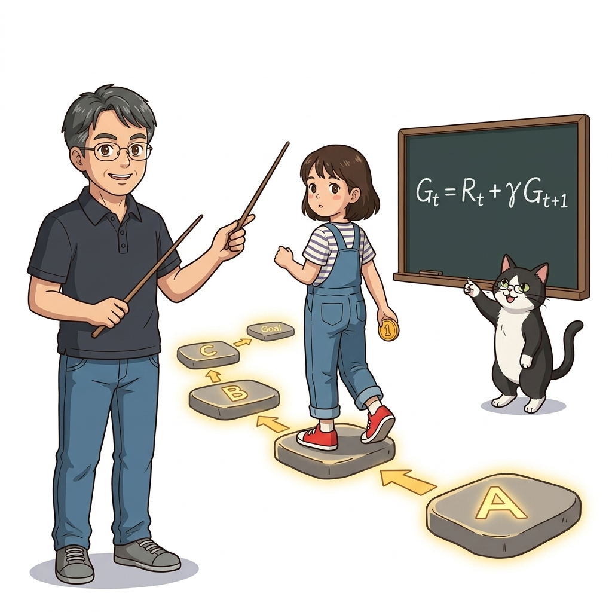
그림 09-2-4b 이호진 교수님이 포인터로 골 지점에서 시작 지점으로 거슬러 올라가는 역방향 징검다리 화살표를 가리키며, 이미 구한 미래 수익 Gt+1을 재활용하는 Gt = Rt + γGt+1 점화식을 도로시와 지니에게 설명하는 장면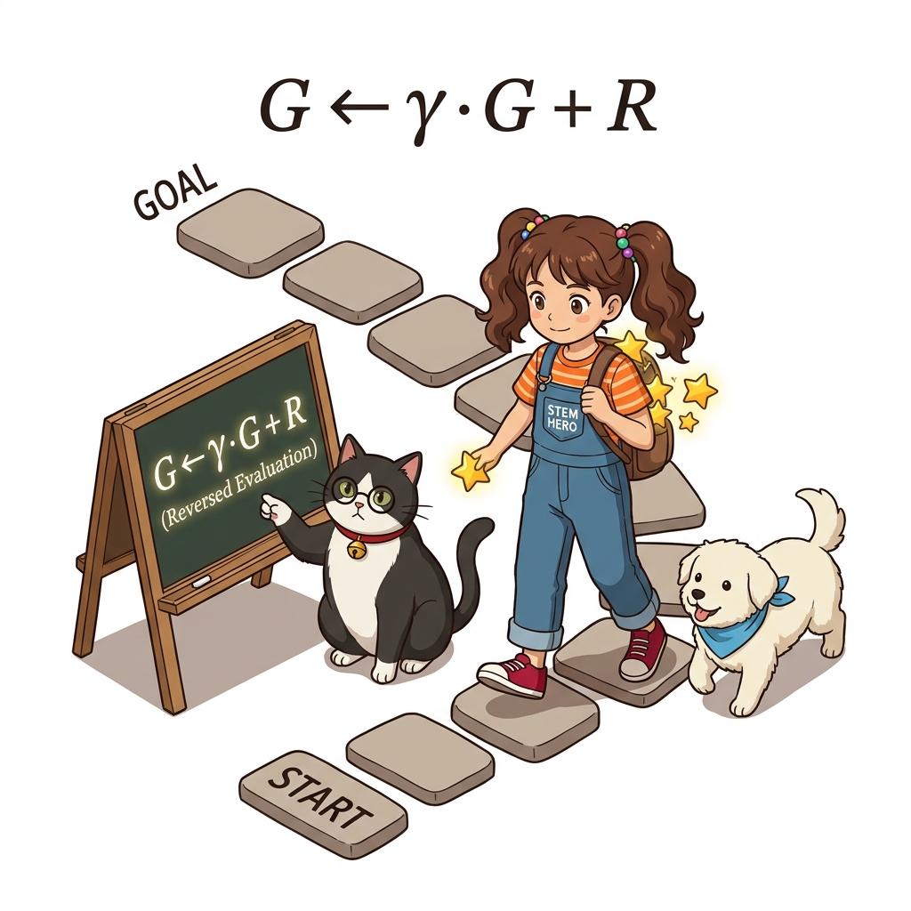
그림 09-2-5 골 지점에서부터 뒤로 걸어오며 할인율 γ를 곱해 미래 수익을 재사용하는 역방향 수익 정산 점화식 시각화💡 계산 복잡도의 기적: O(T2)에서 O(T)로의 대혁신!
만약 계산을 앞에서부터 순서대로(GA → GB → GC) 한다면, GA를 구할 때 R1, R2를 더하고, GB를 구할 때 R2를 또 더하는 심각한 중복 덧셈이 발생합니다. 에피소드 길이가 100스텝이라면 약 (100 × 101) / 2 ≈ 5,000번의 연산이 필요합니다.
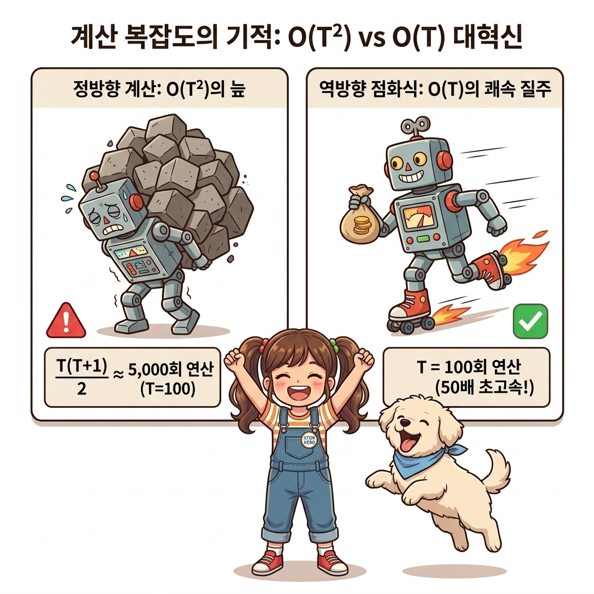
그림 09-2-5d 정방향 누적 O(T^2) vs 역방향 누적 O(T) 계산 복잡도 극적 비교: 5,000회 중복 연산의 비효율과 100회 단일 패스의 쾌속 질주하지만 골(Goal)에서부터 출발지를 향해 거꾸로(GC → GB → GA) 거슬러 올라가며 계산하면:
- 맨 끝 상태 C의 수익은 즉각 보상 R2로 바로 확정됩니다 (GC = R2).
- 바로 앞 상태 B의 수익은 이미 구해둔 GC에 할인율 γ만 곱해서 즉각 보상 R1과 더하면 끝납니다 (GB = R1 + γGC).
- 가장 앞선 상태 A의 수익 역시 이미 구해둔 GB에 γ만 곱해서 R0와 더하면 즉시 끝납니다 (GA = R0 + γGB).
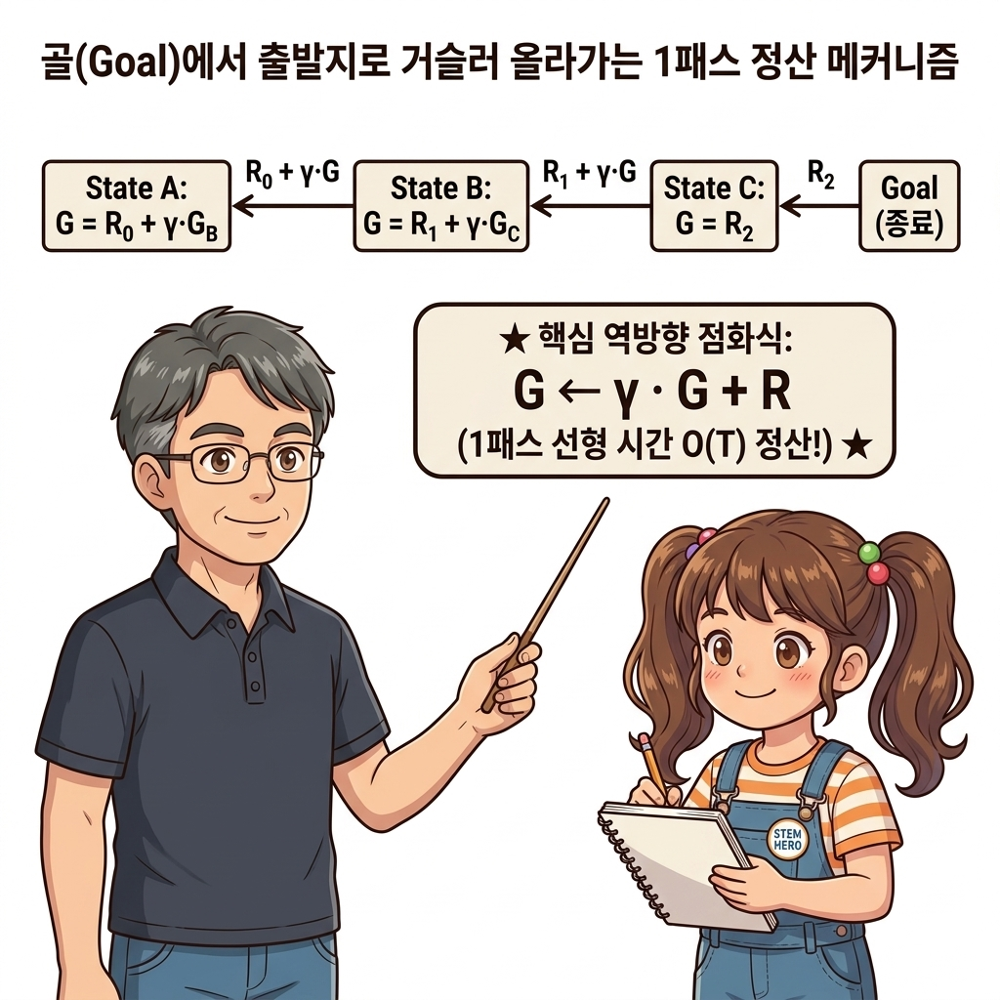
그림 09-2-5e 골(Goal)에서 출발지를 향해 거꾸로 거슬러 올라가며 단 1회의 곱셈과 덧셈으로 상태별 수익을 확정 짓는 단계별 정산도에피소드 길이가 100스텝이어도 단 100번의 곱셈과 덧셈(O(T) 선형 시간)만으로 모든 상태의 수익 정산이 눈 깜짝할 사이에 완료됩니다! 파이썬 코드에서 에피소드 메모리 리스트를 reversed(memory)로 뒤집어 순회하는 이유가 바로 이 눈부신 계산 최적화 때문입니다.
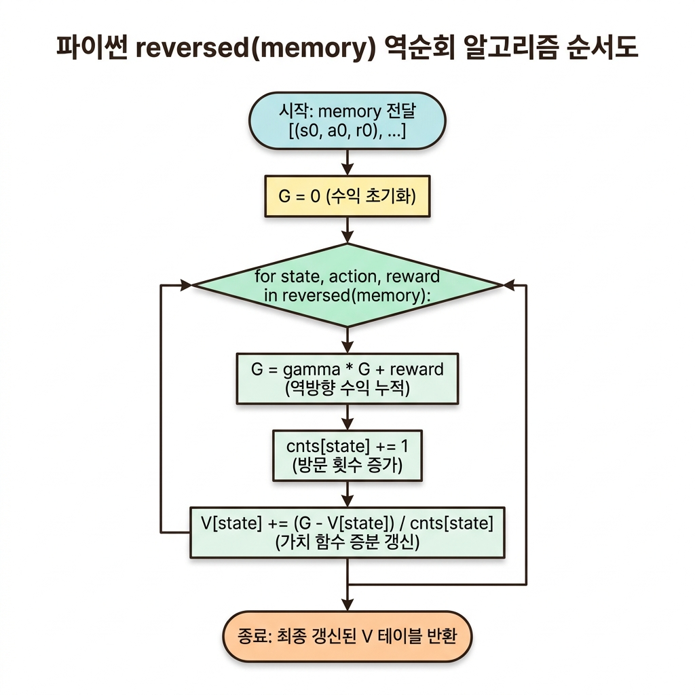
그림 09-2-5f 파이썬 reversed(memory) 역순회 알고리즘 순서도: Goal 직전부터 거꾸로 돌며 G = gamma * G + reward 를 누적하고 가치 함수를 갱신하는 표준 순서도09.2.4 핵심 정리: 몬테카를로 정책 평가의 3대 핵심 기둥
몬테카를로 기법을 강화학습 정책 평가에 적용하는 핵심 원리는 다음 3가지 기둥으로 요약됩니다:
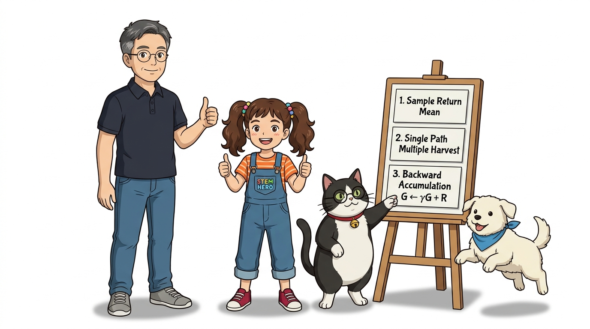
그림 09-2-6 몬테카를로 정책 평가의 3대 핵심 기둥(수익 표본 평균, 단일 경로 다중 수확, 역방향 재귀 정산)을 총정리하는 연구실 4인방 (16:9 와이드)- 경험 수익의 표본 평균 (Return Averaging):
-
환경의 전이 확률 모델 p(s’ s, a)를 전혀 몰라도, 에피소드를 끝까지 완주하며 얻은 실제 수익들의 산술 평균 Vπ(s) = (∑ G(i)) / n으로 참 가치 함수를 완벽하게 근사합니다.
-
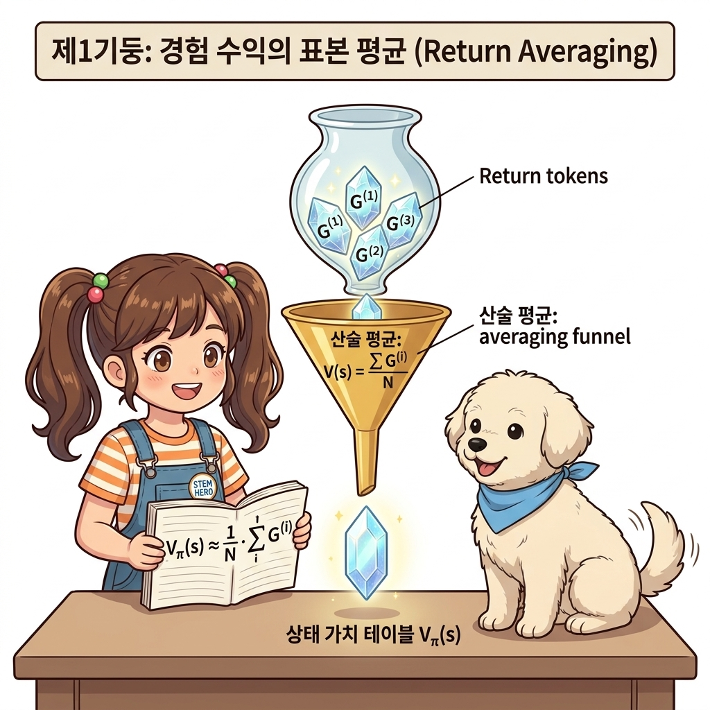
그림 09-2-6a 제1기둥: 환경 모델 없이 완주된 에피소드 수익들의 표본 평균으로 참 가치를 수렴시키는 수익 표본 평균 인포그래픽- 단일 경로 다중 상태 수확 (Multi-state Harvesting):
- 상태마다 따로따로 출발할 필요 없이, 단 한 번의 에피소드 주행으로 경로 상에 방문한 모든 상태(A, B, C)의 수익 표본을 동시에 수확합니다.
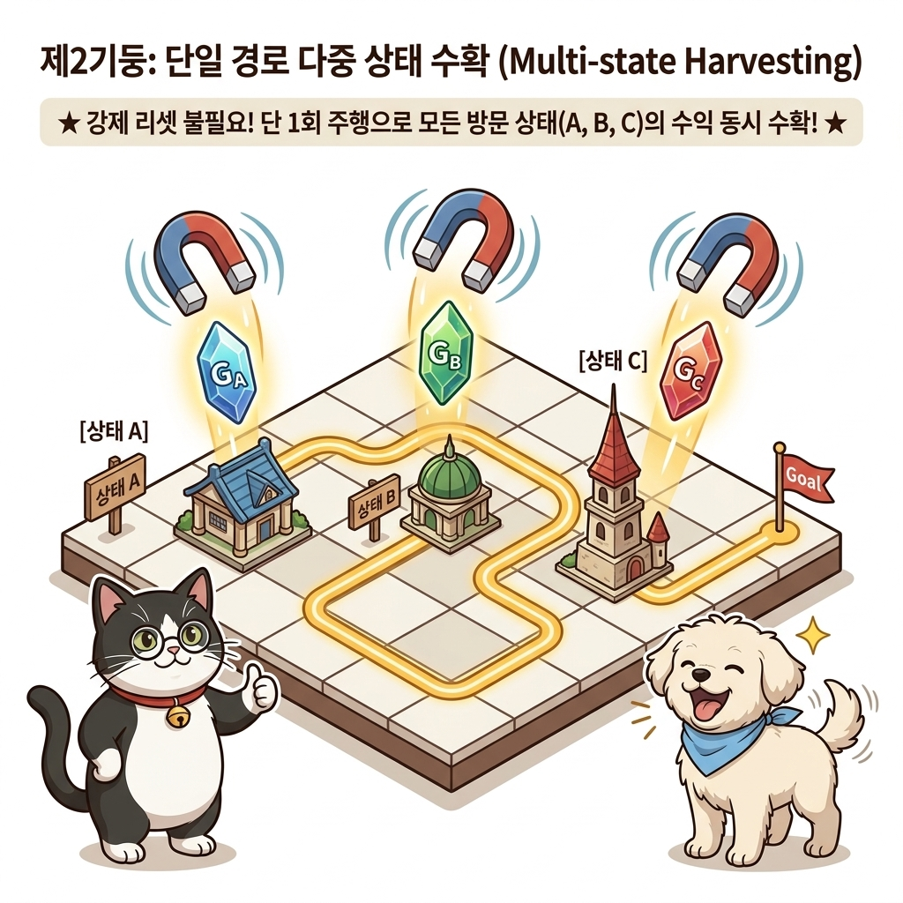
그림 09-2-6b 제2기둥: 단 1회의 주행 경로로 방문한 모든 상태의 수익 표본을 일거에 거두어들이는 1타 다피 수확 인포그래픽- 초고속 역방향 재귀 정산 (Backward Recursion):
- Gt = Rt + γGt+1 점화식을 이용하여 골에서부터 거꾸로 계산함으로써, 불필요한 중복 연산 없이 O(T)의 초고속으로 모든 상태의 가치를 업데이트합니다.
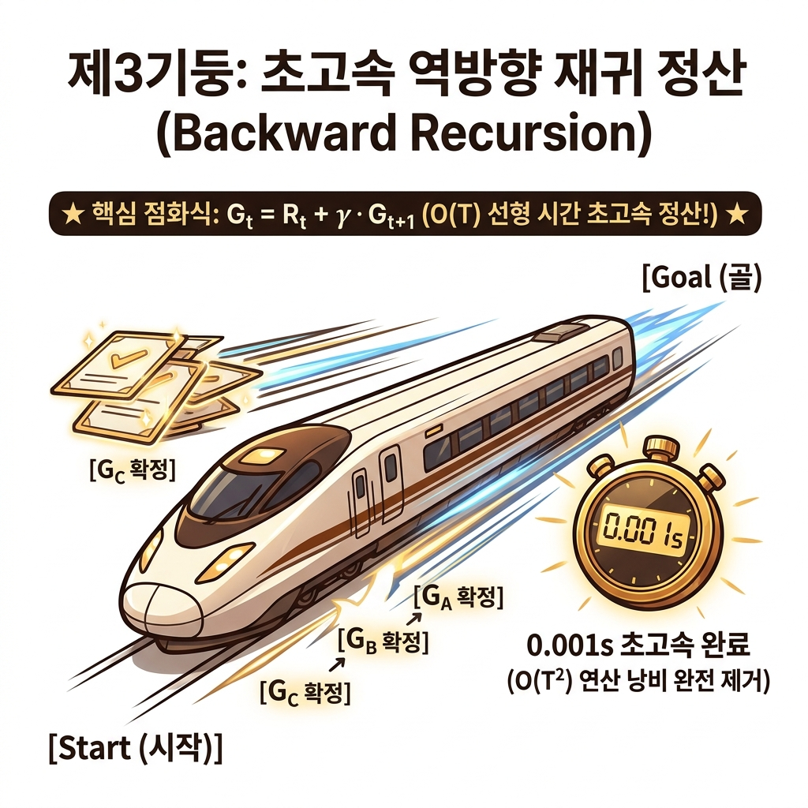
그림 09-2-6c 제3기둥: G_t = R_t + gamma * G_{t+1} 점화식으로 O(T) 선형 시간에 모든 가치를 갱신하는 초고속 역방향 재귀 정산 인포그래픽👨🏫 이호진 교수님의 직강 노트:
“몬테카를로 정책 평가의 백미는 바로 ‘끝까지 가보고 거꾸로 정산한다’는 점입니다. 인생에서도 목표를 이룬 뒤 지나온 길을 되돌아볼 때 각 순간의 가치를 비로소 명확히 평가할 수 있듯이, 몬테카를로법은 에피소드 완주 후 골에서부터 거꾸로 보상을 묶어줌으로써 복잡한 미래의 가치를 명쾌하게 밝혀냅니다.”
그림 09-2-6d 이호진 교수님의 직강 멘토링 노트: 인생에서도 목표를 이룬 후 지나온 길을 되돌아볼 때 각 순간의 가치가 명쾌해지듯, 완주 후 거꾸로 정산하는 몬테카를로의 지혜
🐱 조교 지니의 핵심 요약 노트:
“수학적 원리를 완벽하게 마스터했으니, 이제 다음 9.3절에서는 도로시와 함께 그리드월드 환경에서 에피소드를 생성하고reversed()함수로 가치 함수를 업데이트하는 순수 파이썬 몬테카를로 코드 구현으로 신나게 넘어가 보자냥!”
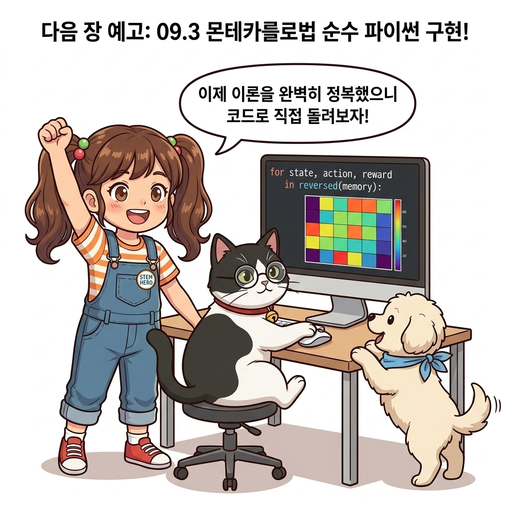
그림 09-2-6e 다음 장 예고: 그리드월드에서 에피소드를 생성하고 reversed()로 가치 함수를 갱신하는 9.3 순수 파이썬 구현 코드로 신나게 출발하는 연구실